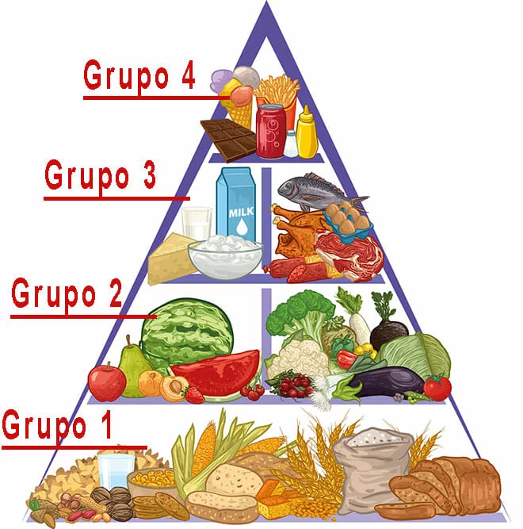
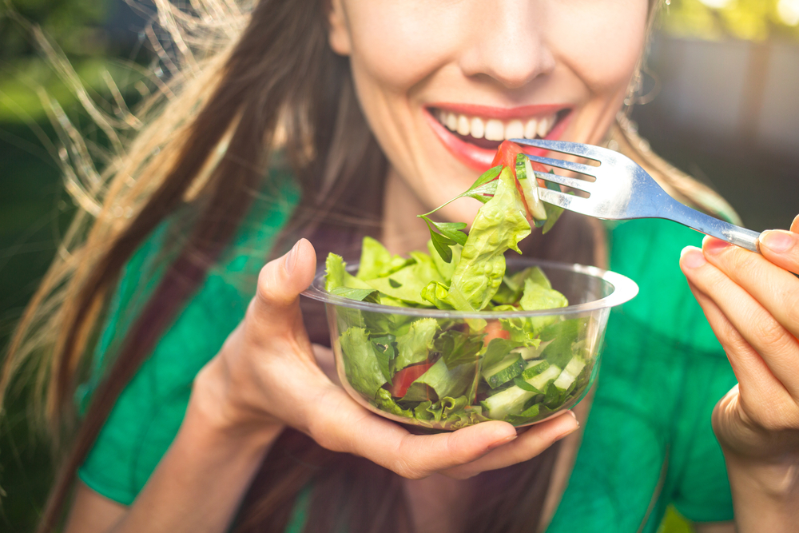

ALIMENTAÇÃO SAUDÁVEL
Alimentação Saudável: O que é, Benefícios e Cardápio
Equipe Healthy Life
Um guia completo sobre a importância de ter uma alimentação saudável. O que se deve evitar, os alimentos mais recomendados, dicas para não desistir e cardápio completo para quem quer emagrecer e ganhar massa muscular. |
Pirâmide alimentar – Saiba tudo sobre o modelo de pirâmide brasileira
Equipe Healthy Life
|  | Conheça os grupos alimentares na pirâmide brasileira. A importância de incluir determinados alimentos em nossa dieta, e as precauções com os excessos para não prejudicar nossa saúde. |
20 Alimentos para Comer Antes do Treino
Equipe Healthy Life
|  | Veja a lista com 20 alimentos para serem consumidos no pré-treino que vão ajudar a garantir mais energia, melhor performance, evitar o catabolismo e ainda contribuir para o ganho de massa muscular. |
Vitamina C: Para que serve, Benefícios, Alimentos e Como tomar
Equipe Healthy Life
Saber escolher ótimas fontes de alimentos ricos em Vitamina C e a dosagem correta para ingestão de suplementos, é a melhor forma de obter todos os benefícios da vitamina C em sua vida. Veja agora como não cometer erros. |
Dieta – 4 dicas de alimentação para iniciantes na musculação
Equipe Healthy Life
 |
Um guia completo sobre a importância de ter uma alimentação saudável. O que se deve evitar, os alimentos mais recomendados, dicas para não desistir e cardápio completo para quem quer emagrecer e ganhar massa muscular. |
5 receitas vegetarianas light deliciosas e rápidas de preparar
Equipe Healthy Life
 |
Separamos para você, as mais saborosas receitas vegetarianas (salgados e doces) que além de serem super fáceis de preparar, são saudáveis e não afetam sua dieta. |